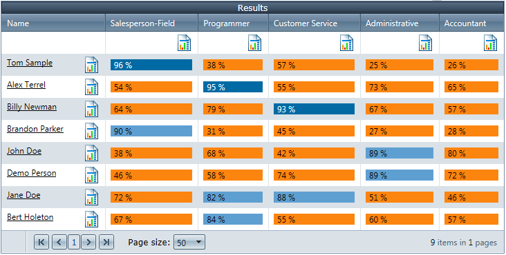
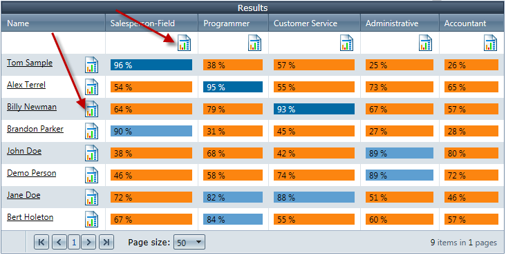

The Job Fitness Rating Report Pricing for this system is based on a monthly automated unlimited usage charge. The purpose of the Job Fitness Report is to show decision makers how they can understand the contribution of behavioral fitness to job effectiveness and how to use that understanding in interpreting past behavioral job effectiveness as well as making better decisions in the future. Understanding behavioral fitness offers the practical power of being able to focus their attention and make distinctions regarding the strength of the behavioral fitness between a specific job and the candidate’s/individuals behavioral style. The Job Fitness Rating is a measure that evaluates the strength of the behavioral relationship between a job candidate and the more typical behaviors required by a job. The Job Fitness Rating integrates all four (4) dimensions of DISC into an overall measure that reflects the strengths of the behavioral similarities and/or differences to maximize behavioral effectiveness on the job. The fitness rating is scored on a scale between 1% and 100%. The fitness rating represents the strength of the relationship between the candidate’s behavioral style and the behavioral requirements of a specific job. The higher the fitness rating, the more able the candidate’s natural behavioral style can be applied to the task of getting the job done consistent to the job profile.
A behavioral style itself is not so much what the individual thinks or says about a person, thing or idea. It’s your observation of how that individual tends to act toward people, things and ideas. The behavioral style fitness rating places a candidate’s fitness compared to a specific job benchmark on a (3) three-level rating system. The (3) level rating system ranges from limited to excellent to further clarify the fitness rating. Consider the fitness rating score like a score you are familiar with on a scale from 1 to 100. The higher the fitness rating score, the more confident you can be that the desired behaviors you want for a specific job will be observable with this candidate/individual. The lower the fitness rating, the more confident you can be that the desired behaviors you want for a specific job will not be observable with the candidate/individual. A fitness rating of .75% means that the candidate and the job profile share .75% of the target behaviors whereas 25% of the behavioral style is different. To understand which behaviors are similar or different, look at the 12 factors and four factor details on page 4 of the sample report. An Excellent Fitness Ratings means the employee/candidate will spend less energy thinking about how to adapt their behaviors to the behaviors required of the targeted job role and allow their more natural behaviors to create results. A Good Fitness Rating means the employee/candidate will need to be reminded from time to time of their behavioral effectiveness in their role. A Stretch Fitness Rating means the employee/candidate will need to facilitate their behavioral effectiveness through consistent timely feedback and structures. The lack of quality feedback regarding an individual’s behavioral distance from a specific job requirement has the potential of creating a false illusion that their behaviors are effective which reinforces their current behavior. Summary of the DISC Fitness Reporting System (on screen capability) Pricing for this system is based on a monthly automated unlimited usage charge. NOTE: In order to analyze and compare individuals and benchmarks, you start by using individuals with completed DISC assessments. You also create your benchmarks via the DISC Fitness Benchmark creation tool located in your admin. The purpose of this system is to allow you to compare benchmarks to individuals (end users). You can also compare end users to end users. You can choose as many benchmarks or end users as desired. The results will display in a grid showing all the percentage matches. You can then click on each percentage(%) to gain a more detailed analysis along with the ability to generate a full PDF Fitness report. You are not limited to selecting benchmarks and individuals. You can also selection ONLY individuals or benchmarks. This would allow you to compare people to people and vice versa. Our system allows you to make
selections and produce a grid for further analysis. Below are some screenshots.
 You can click on any row/column to
view a one page breakdown with additional details.

The above is just a summary. Please contact
us for a detailed demo and to answer additional questions. |